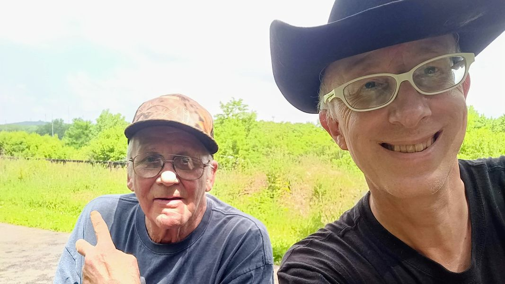

Timeline photos
Herman died last week.
We found Herman living under a bush near Circle K in Middlebury in Akron.
He had a very hard time walking. So a couple people helped him back to our tent community.
Everyone had to contribute an hour a day to the community. Herman's job was to sit in a chair at the door of the building that lead from the tent village. He was to make sure no one came or went who wasn't supposed to be either in the building or in the tent village.
He did that job all day everyday for weeks , if not months.
Eventually he oversaw the day center. He would sit at his desk, all day every day, where he also managed a little thrift store.
You never wanted to cross Herman. He would never put up with any shenanigans.
Herman was a critical lynch pin in why our organization ran so well. He was amazing at keeping the order. People listened to Herman. We ALL listened to Herman.
Herman had an amazing life. He hitchhiked from coast to coast at least twice. He lived all over this country. Sometimes he was homeless, sometimes he wasn't.
Herman was never afraid. I think that's the biggest takeaway for me. Herman lived his life the way Herman wanted to live his life. He saw and did so many interesting things. I think that's a message more of us could take to heart. Life will pass you by if you are too afraid or too practical.
Herman lived his life to the fullest. He was an amazing dude.
I love you Herman. Thank you for being part of my life and such an important part of our homeless day center and tent village.